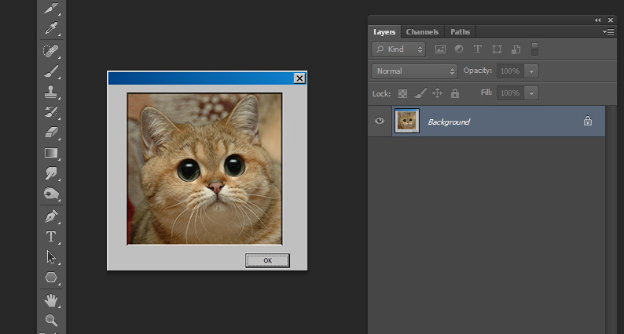
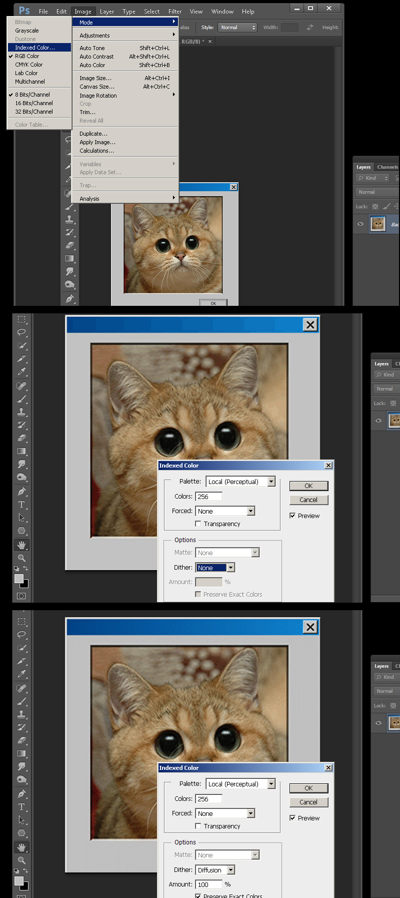
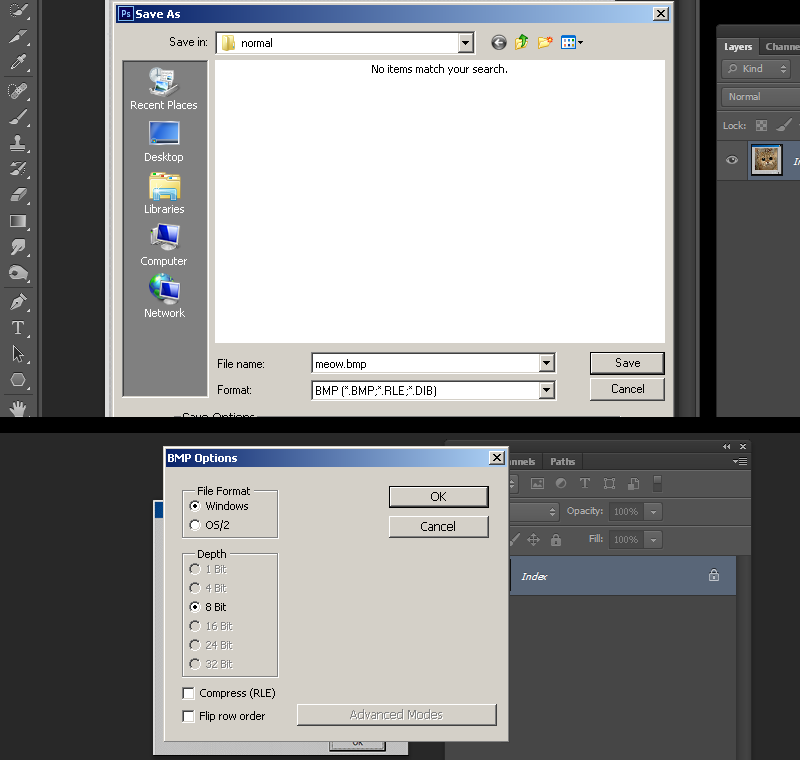
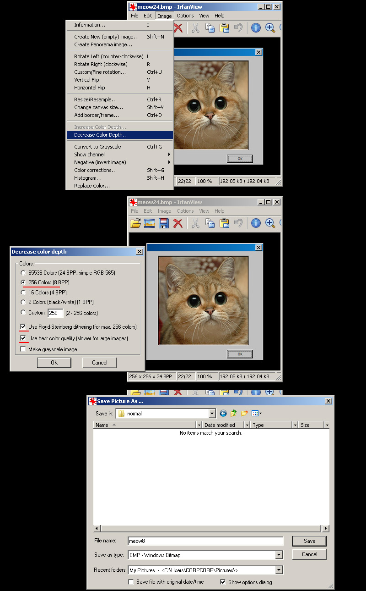
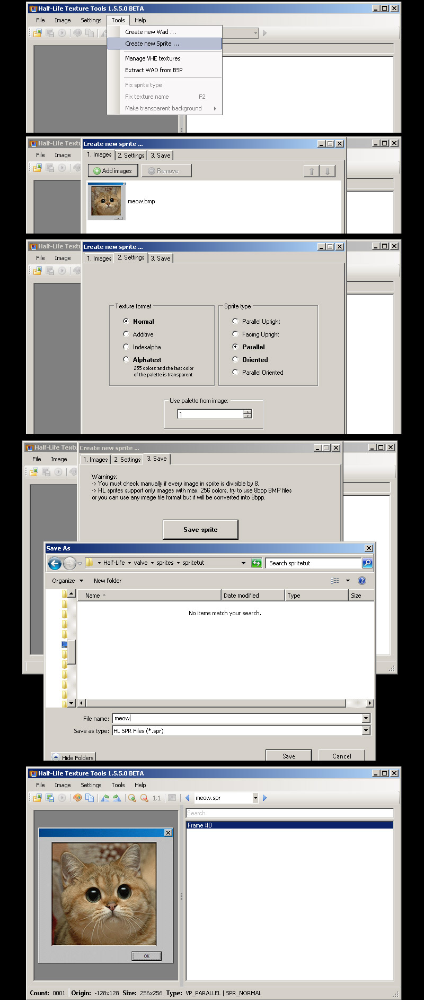
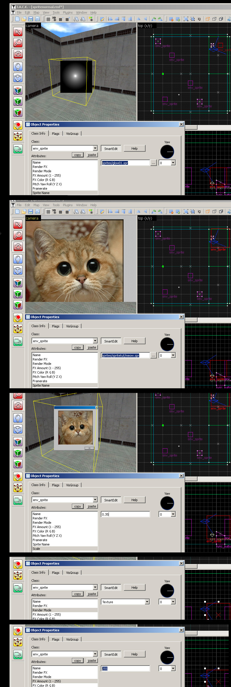
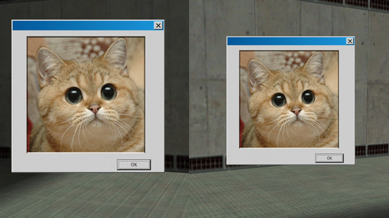
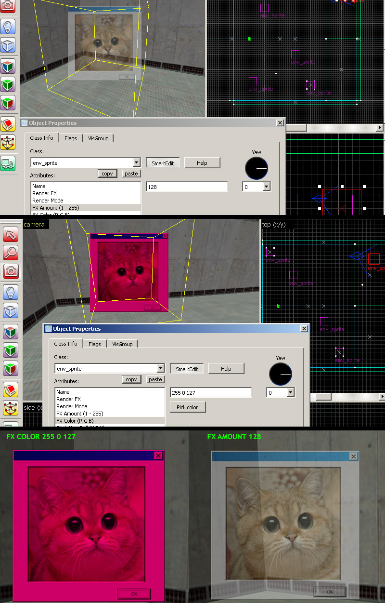
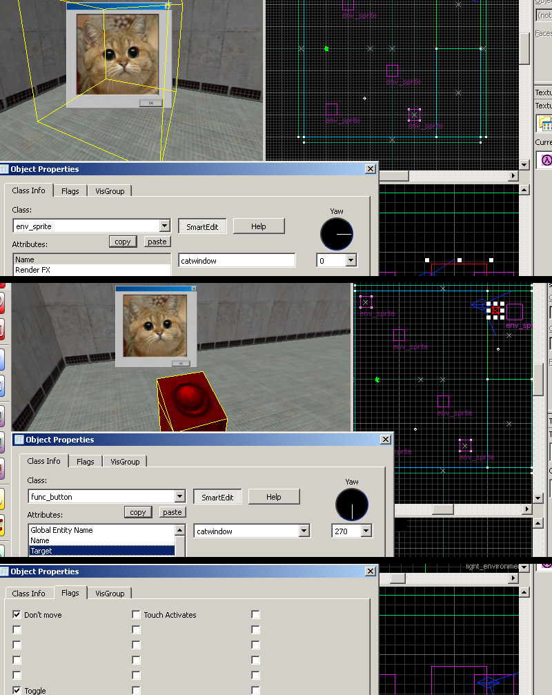
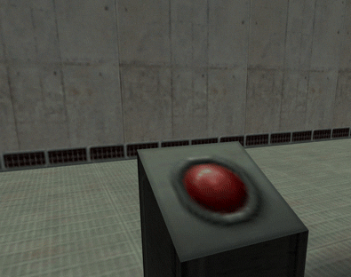

1) Begin by creating a new document and scale the image to a GoldSrc friendly dimensions which is a divisible by 16 number. I have my image ready at 256X256.

2) When finished convert the image to indexed color by going to mode> Index.. and set to any of the "local" palettes (perceptual, selective, and adaptive*). Preview the image. If your image has gradients than start to get a "banding effect", you can lessen these harsh edges by using the Dithering option. Dithering scatters pixels between transitions to make them somewhat smoother. Notice the difference on the blue top bar for with and without dithering.
*Adaptive algorithm reproduces colors most often in image, Perceptual takes spectrum priority of the eye, Selective favours colors that appear in large areas and graphics.
However, if you do not want to fine tune color dithering or palette selection you can flatten the image and save as BMP format 24bit, then import your BMP into HLtools sprite creator and let it auto-convert the colors for you. If you are doing this skip to step 4.
If you are using a program other than Photoshop skip to step3a

3) Save out the image as BMP. When prompted for 8bit hit okay.

3a) If you do not have photoshop, the common option names for making an indexed color image is "save as 8bit", "256 colors", or "indexed". If your program is lacking in creating a decent palette or cannot save properly you can save out your image as a 24bit BMP and use IRFANVIEW to do the conversion. I encourage to use this way if you are using Paint.net or GIMP because i've found that 8-bit conversion in those programs tend to not reproduce accurate results.
Open the image and go to "decrease color depth". Choose 256 colors, check "use best color quality" and check "use dithering" if your image needs to be dithered. Press okay and go file-save to BMP.

4a) Open up half-life texture tools and go to Tools>Create new sprite... then click "add new images". Add your newly created BMP.
4b)Go to the number 2 "Settings" tab and leave "Normal" as your texture format. For sprite format leave as default "parallel". Click tab 3 and hit save.
4c) Save the sprite in your own folder in the sprite directory. I am using "spritetut" so it looks like this:
C:\Program Files (x86)\Steam\steamapps\common\Half-Life\valve\sprites\spritetut
Once saved it will prompt you to open in viewer. View if needed but be sure to close HL-Texture tools before opening the map editor or else it may not open in hammer due to the file being in use.

5) Open up hammer or J.A.C.K and create an env_sprite. Click the "..." box next to the "Sprite Name" path to bring up the search path. Select your sprite. It should appear, but now we need to set the scale, I went with 0.35. Now set the render mode to "Texture", and finally check the "FX amount" and be sure that it says 255 and is not blank. However, leave the name field blank for now.

6)Compile the map and observe. As you can see the sprite in parallel mode faces the viewer.

7) Here I am showing off optional things such as FX color tint and FX amount and how it affects the sprite:

8)Now we will make the sprite able to receive inputs by giving it a name. Its important to know that giving a sprite a name by default starts the sprite in "off" state. (If you want the sprite begin in the "On" state, go to the flags" tab and check "Start on".) I have created a func_button entity with the target of the named sprite and the button has the "toggle" flag. As you can see pressing the button turns the sprite on and off.

